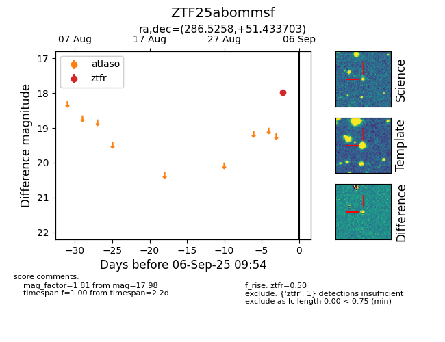

FINK: ZTF25abommsf
Lasair: ZTF25abommsf
ALeRCE: ZTF25abommsf
ZTF25abommsf (ztf,fink)
equatorial (ra, dec) = (286.5258,+51.43370)
galactic (l, b) = (81.8666,+18.72636)

last ztfg=18.68, ztfr=17.98
1 ztfg, 1 ztfr detections